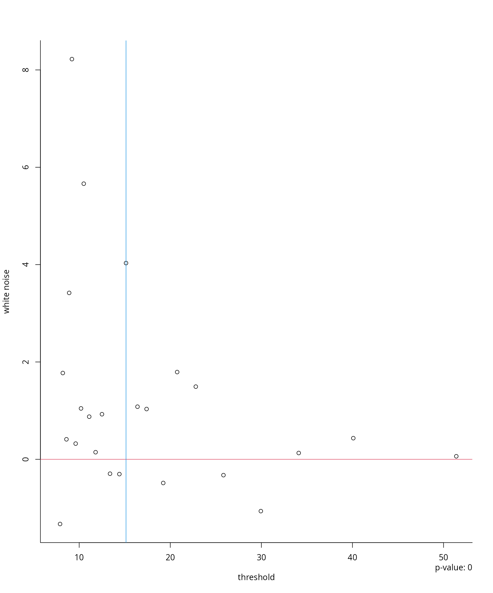

Threshold selection tools
Léo Belzile
2022-03-11
Source:vignettes/02-threshold.Rmd
02-threshold.RmdThe generalized Pareto (GP) distribution with scale \(\sigma \in \mathbb{R}_{+}\) and shape \(\xi \in \mathbb{R}\) is \[\begin{align*} G(x) = \begin{cases} 1-\left\{1+\xi \left(\frac{x}{\sigma}\right)\right\}_{+}^{-1/\xi}, & \xi \neq 0, \\ 1-\exp \left(-{x}{\sigma}\right),& \xi = 0. \end{cases} \end{align*}\] The range of the generalized Pareto distribution is \([0, -\sigma/\xi)\) if \(\xi < 0\) and \(\mathbb{R}_{+}\) otherwise.
Why is the generalized Pareto distribution so central to peaks-over-threshold analysis? The conditional distribution of exceedances over a threshold \(u < x^*\) converges to a generalized Pareto distribution as \(u\) converges to the endpoint of the distribution, \[\begin{align*} \lim_{u \to x^*} \frac{1-F(xa_u+u)}{1-F(u)} = 1-H(x), \end{align*}\] where \(H(x)\) is the distribution function of \(\mathsf{GP}(1, \xi)\).
If \(X \sim \mathsf{GP}(\sigma, \xi)\), straightforward calculations show that \(X-u \mid X>u \sim \mathsf{GP}(\sigma + \xi u, \xi)\) for any \(u \in \mathbb{R}\) such that \(\sigma+\xi u>0\), meaning that conditional exceedances above a threshold \(u\) also follow a generalized Pareto distribution. This property is termed threshold-stability.
The limiting distribution of threshold exceedances is generalized Pareto as \(u \to x^*\) but, in practice, we must choose a finite threshold in order to have enough exceedances to draw inference. Since the scaling constant \(a_u\) is unknown, we have \(X \mid X > u \stackrel{\cdot}{\sim} \mathsf{GP}(\sigma_u, \xi)\). The term \(1-F(u)\) in the denominator is the fraction of points exceeding the threshold, which has a binomial distribution.
Threshold selection is subtle and it is common to select a high percentile of the data, say the 95% value, as the threshold, even if this is asymptotically incorrect, as in this case \(k/n \nrightarrow 0\) as \(n \to \infty\). Most approaches for threshold selection rely on properties of the generalized Pareto distribution (moments, threshold-stability) to determine a region within which the asymptotic distribution fits the data well and the parameter estimates are stable.
Below, we focus on recent graphical selection tools for likelihood
based inference; mixture models are reviewed in Scarrott and MacDonald (2012) and are available
in the package evmix.
Threshold stability plots
Consider a sequence of ordered candidate thresholds \(u_1 < \cdots < u_k\); one of the most
widely used tools for threshold selection is the threshold-stability
plots of Davison and Smith (1990). These
show the point estimates of the shape \(\xi\) and the modified scale \(\sigma_{u_i}-\xi u_i\), which should be
constant for any threshold \(u_{j}
>u_i\) assuming that the generalized Pareto above \(u_i\) holds exactly. In addition to the
point estimates, the asymptotic pointwise 95% Wald confidence intervals
are displayed; the standard errors are obtained from the observed
information matrix. While these are displayed by many packages, notably
extRemes, ismev and evd ,
mev allows you to use profile likelihood based confidence
intervals, which typically offer better coverage and capture some of the
asymmetry of the distribution. The mev package functions
for producing threshold stability plots are tstab.gpd and
tstab.pp for respectively the generalized Pareto and
Poisson process likelihoods.
Parameter stability plots can be difficult to interpret because the confidence intervals are pointwise rather than simultaneous (each fit likewise uses an overlapping portion of the data). The plots also ignore changes in the estimated parameters due to the penultimate approximation.
Wadsworth’s diagnostics: white noise process and simultaneous threshold stability plots
The problem with the threshold stability plots lies in the point-wise
nature of the estimate. Assuming a superposition of \(k\) Poisson processes, Wadsworth (2016) derives the limiting
distribution of the maximum likelihood estimators from the Poisson
process for overlapping windows as the number of windows \(k \to \infty\) and \(n_k \to \infty\). The joint asymptotic
Gaussian distribution allows Wadsworth
(2016) to propose two additional diagnostics: a white noise
sequence of differences in estimates of the shape, standardized to have
unit variance. The variables \(\xi^*_i=(\hat{\xi}_{u_{i+1}}-\hat{\xi}_{u_i})/\{(I^{-1}_{u_{i+1}}-I^{-1}_{u_{i}})_{\xi,\xi}^{1/2}\}\),
where \(I_{u_{i}}\) is the Fisher
information of the Poisson process likelihood for exceedances above
\(u_i\), should form a white-noise
sequence of independent variables centered around the origin; systematic
deviations are indicative of inadequacy. To formally test the
hypothesis, a likelihood ratio test can be used assuming a simple
alternative, namely a single change point at threshold \(u_j\). The null hypothesis is \(\mathrm{H}_0: \xi_i^* \stackrel{\cdot}{\sim}
\mathsf{No}(0,1)\) for \(i=1, \ldots,
k-1\) against the alternative \(\mathrm{H}_a: \xi^*_i \sim \mathsf{No}(\beta,
\sigma) (i=1, \ldots, j-1)\) and \(\xi^*_i \sim \mathsf{No}(0,1)\) for \(j, \ldots, k-1\). This alternative is
motivated by results on model misspecification (White 1982), which suggest that the asymptotic
distribution may still be Gaussian, but with a different mean and
variance. This can be used to automate threshold selection, by picking
the smallest threshold for which the \(P\)-value is above the level \(\alpha\). The function W.diag
returns diagnostics plots (for the likelihood ratio statistic path, the
white noise process and threshold stability along with asymptotic
simultaneous confidence intervals) for non-homogeneous Poisson process
model and for the bivariate exponential and the over a sequence of
thresholds, specified using q1, q2 and
k. The argument M is a tuning parameter that
can be chosen in a way such that the parameters of the non-homogeneous
Poisson process likelihood coincide with those of the generalized
extreme value distribution for blocks of size \(m\); see Coles
(2001) to this effect.
A main criticism of the proposals of Wadsworth (2016) is their lack of robustness. For the asymptotic result to be approximately valid, the number of thresholds must be large, which implicitly requires large samples for each superposed point process. Moreover, the estimated difference in Fisher information matrices often fails to be positive definite in practice. The procedure is highly sensitive to the choice of \(k\). Changing the set of thresholds \(\boldsymbol{u}\) under consideration leads to potentially completely different parameter estimates being chosen by the automated procedure.
Changepoint tests based on penultimate approximation
Let \(F(x)\) denote a thrice-differentiable distribution function with endpoint \(x^*\) and density \(f(x)\). Define the reciprocal hazard function \(r(x) = \{1-F(x)\}/f(x)\). The existence of the limit \(\xi_{\infty} = \lim_{n \to \infty} s'\{b_n\}\) is necessary and sufficient for convergence to an extreme value distribution and Smith (1987) shows that there exists \(y\) such that \[\begin{align*} \frac{1-F\{u+xr(u)\}}{1-F(u)} = \left\{1+xr'(y)\right\}_{+}^{-1/r'(y)}, \qquad u < y < u+xr(u), \end{align*}\] unless \(r'(x)\) is constant. The penultimate shape parameter for the generalized Pareto distribution is \(r'(u)\), but the true shape parameter lies between \(r'(u)\) and \(\xi_{\infty}\).
When we fit the limiting parametric models to finite samples, maximum likelihood estimates of the shape parameter will be closer to their penultimate counterparts than to the limiting value and we can expect them to vary as we increase the threshold.
Northrop and Coleman (2014) adapt the
idea of Wadsworth and Tawn (2012) and fit
a generalized Pareto model with piecewise constant shape to \(k\) different thresholds; continuity
constraints at the thresholds impose \(k-1\) restrictions on scale parameters, so
the model only has \(k+1\) parameters.
A score test can be used to test the hypothesis of equal shape and it
only requires evaluation of the model under the null hypothesis that a
generalized Pareto distribution is valid above all thresholds. A
diagnostic plot is obtained by plotting \(P\)-values against threshold. One can then
choose to take, e.g., (a) the lowest threshold at which the \(P\)-value is non-significant, or (b) the
lowest threshold at which the \(P\)-values for all higher thresholds are
non-significant: under the null hypothesis, there is an \(\alpha\%\) probability of rejection at any
given threshold. The function NC.diag computes the \(P\)-value of the score test as a function
of the threshold.
Extended generalized Pareto
Papastathopoulos and Tawn (2013)
propose three extended generalized Pareto distributions: for example,
the third extended generalized Pareto model has distribution function
\(\{1-(1+\xi
x/\sigma)^{-1/\xi}_{+}\}^{\kappa}\) for \(x >0\) and \(\kappa > 0\). Each family reduces to the
generalized Pareto when the additional parameter \(\kappa=1\) and share the same tail index
\(\xi\), the extended generalized
Pareto provide more flexibility for modelling departures from the
limiting form. Standard parameter stability plots can be used to find a
region in which \(\kappa \approx 1\)
and the shape parameter stabilizes. The additional parameter gives
flexibility for modelling departures from the limiting distribution and
the hope is one can fit to exceedances over lower threshold and increase
the number of points to which the distribution is fitted. The stability
plots, obtained through tstab.egp, suffer from the same
caveats as classical diagnostics.
Robust selection
The extreme value distributions have unbounded influence functions and outliers can strongly affect the estimate of the shape. Dupuis (1999) proposes an optimal \(B\)-robust estimator of the generalized Pareto parameters. Points that are outlying or for which the fit is poor are downweighted; if the weights for the largest observations are very low, this suggests that the threshold is too low. While there is no guarantee that observations that were simulated from a generalized Pareto distributed would not be downweighted, systematic downweighting of the largest exceedances may be indicative of poor fit.
We are now ready to go back to the Maiquetia data and try to select a reasonable threshold. To this effect, we select a sequence of candidate thresholds and run the procedures described above.
library(mev)
data(maiquetia, package = "mev")
day <- seq.Date(from = as.Date("1961-01-01"),
to = as.Date("1999-12-31"),
by = "day")
nzrain <- maiquetia[substr(day, 1, 4) < 1999 & maiquetia > 0]
# Keep non-zero rainfall, exclude 1999 observations
nzrain <- maiquetia[substr(day, 3, 4) < 99 & maiquetia > 0]
thcan <- quantile(nzrain,
seq(0.8, 0.99, length.out = 25))
tstab.gpd(dat = nzrain,
thresh = thcan,
method = "profile")
tstab.egp(xdat = nzrain,
thresh = thcan,
model = "egp2")
What do you notice on the parameter stability plots?
We can plot simultaneous parameter stability plots for the shape, as
well as the white-noise sequence. The W.diag function,
which implements the tests of Wadsworth
(2016), returns the white noise process and calculates by
simulation the null distribution, selecting the lowest threshold at
which the hypothesis of changepoint is not rejected for all higher
thresholds. For the Maiquetia rainfall, a threshold around 15.15mm is
returned.

Another option is the Northrop and Coleman
(2014) penultimate test, which considers a sequence of threshold
and tests whether a single shape fits the data against the alternative
where the shape parameter differs at each candidate threshold following
a step function. The NC.diag function plots the \(p\)-value path against the candidate
thresholds; the top axis also displays the number of threshold
exceedances. The extended generalized Pareto distribution can also be
used to produce threshold stability plot with 95% confidence intervals.
The parameter \(\kappa=1\) if the model
is generalized Pareto. Although there are three potential families, the
family egp2 exhibits the fastest converence for
fNCdiag <- NC.diag(x = nzrain, u = thcan)Your turn
- Try using the threshold diagnostic tests on the
niddriver flow data. Which threshold would you choose based on the conclusions of the test? Repeat the analysis on your favorite dataset. - Compare the inference obtained by using the different threshold (by comparing, for example, return levels or quantiles of a distribution of interest). Are your results sensitive to the choice of threshold?